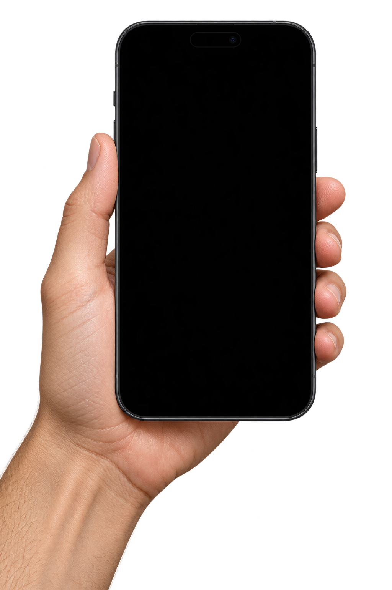

인터랙티브 데모
낯선 도시의
첫인사.
인도, 자이푸르. 당신의 여행이 시작됩니다.
자이푸르 · 핑크 시티 17:42
현지 가이드아르준
아르준자이푸르에서 만난 현지 가이드01 — 04
“처음 오셨죠? 숙소까지 데려다줄게요.
이 골목으로 가면 훨씬 빨라요.”
친절한 제안. 하지만, 처음 보는 길인데…
당신의 작은 안전 기지잠깐 확인하면,
잠깐 확인하면,
여행이 달라져요.
길 위의 정보가 다음 선택의 힌트가 됩니다.

!m